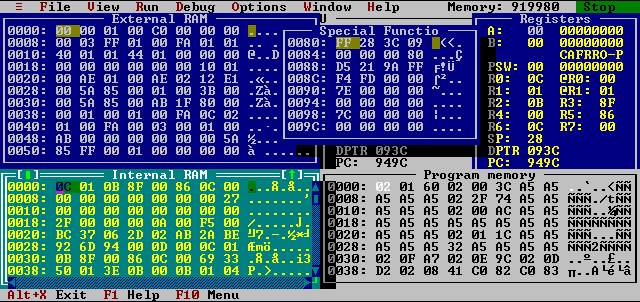

Software simulator for MCS51
This screenshot demonstrates some kind of windows that can be opened
using commands in View menu. Every windows including CPU window
can be resized and moved on the desktop area. Every windows are active
which means that value of displayed data can be changed at any time
including execution of the simulated program.
